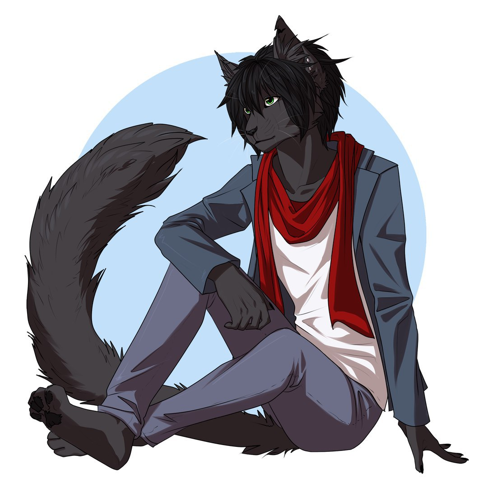
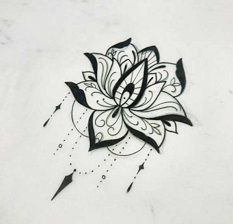

Назад, к выбору <----
1. Эрнест Хиро`масу
2. 18
3. М
4. Бисексуал
5. Кот
6. Чёрный кот с пышным хвостиком и зелёными глазками. Тело стройное, жилисто. Узкие плечи, крепкие мышцы на руках и ногах,
носик чёрный, как и подушечки на лапках. На попке небольшая эмблемка лотоса белого цвета. Волосы на голове гладкие, запах тела
чистый благодаря частому соблюдению гигиены. Часто использует адеколоны и различные парфюмы. Обычно носит синие и голубые
джинсы, светлые майки и любит шарфики так же более светлых окрасов. Голос гармоничный, звучит немного старше его возраста.
Речь чёткая без лишних акцентов.
7. Разговорчив но лишнего не скажет. Весьма открыт для добрых душ, но хранить тайны умеет,
не любит ссоры, старается их всячески избегать. Нравятся красивые стройные девушки, новинки моды, мистические книги,
музыка разных мастей и красота природы. Любит интересные темы о психологии и биологии. В физкультурном развитии более
направлен на лёгкую атлетику. В душе мягок и нежен как и его хвостик.
Однако не стоит заблуждаться что если кот порой и ласков, он всё же может хорошенько
поцарапать если начнутся проблемы. Конечно драки для него - крайние меры для самообороны и показа что его лучше не
обижать...в остальном мягок и пушист
